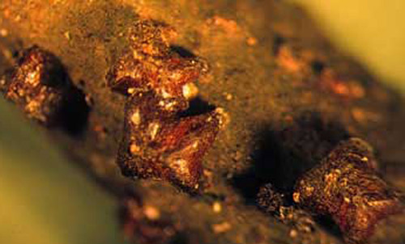

common name: lobate lac scale
scientific name: Paratachardina pseudolobata (=lobata) Kondo & Gullan (Hemiptera: Sternorrhyncha: Coccoidea: Kerriidae)
Introduction - Description and Biology - The Lac Scale Family - Effects on Host Plants - Host Range - Potential Expansion in Distribution - Pest Management Prospects - Selected References - Versión en Español
Introduction (Back to Top)
The lobate lac scale, Paratachardina pseudolobata Kondo & Gullan (Hemiptera: Sternorrhyncha: Coccoidea: Kerriidae), was found for the first time in Florida on a hibiscus (Hibiscus rosa-sinensis) in the town of Davie (Broward County) in August 1999 by personnel of the Florida Department of Agriculture and Consumer Services, Division of Plant Industry (DPI) (Hamon 2001). The identification of the species as Paratachardina lobata by Avas Hamon of DPI was confirmed by D. R. Miller of the Systematic Entomology Laboratory, U. S. Department of Agriculture, Beltsville, MD. Previously, in 1992, Dr. Hamon (personal communication) had identified this species from specimens sent to him from the Bahamas.

Figure 1. Mature females of lobate lac scale, Paratachardina pseudolobata Kondo & Gullan. Photograph by F. W. Howard, University of Florida.
Paratachardina lobata is considered native to Southern Asia and was previously known as an adventive on Christmas Island (Australia). However, in 2007 Kondo and PJ Gullan published a review of the genus Paratachardina in which they determined on the basis of minute morphological features and molecular analysis that the lobate lac scale occurring in Florida, Bahamas, and Christmas Island is a new species, which they named Paratachardina pseudolobata.
Although DPI personnel made considerable effort, locating and destroying infested host plants, by 2002 lobate lac scale was distributed from southern Miami-Dade to Palm Beach County. At present (2008) it is distributed in virtually all counties of southern Florida.
Description and Biology (Back to Top)
The mature females of Paratachardina pseudolabata are about 1.5-2 mm long, and about the same width. The body has two pairs of prominent lobes. To the practiced eye, this scale insect's x-shaped appearance is discernable, even without magnification. The testa is extremely hard and brittle, glossy and of a dark reddish brown color, but often appears dull and black due to a coating of sooty-mold. The first instars (crawlers) are elongate-oval, deep red, and about 0.4 mm long. The characteristic lobate pattern develops in the second instar. The second instar female presumably molts to the adult female as in otherscale insects. Males of this species have not been observed in Florida.
Figure 2. First instar (crawler) of lobate lac scale, Paratachardina pseudolobata Kondo & Gullan. Photograph by F. W. Howard, University of Florida.
Since the mature females of scale insects are wingless, they play no role in dispersal of populations to occupy new host plants. Scale insects rely mostly on passive dispersal of the crawler stage via air currents. Phoresis (being carried by birds and other animals) may be of some importance in some species. Undoubtedly, movement of infested host plants from one locality to the next is a key factor in spreading scale insect pests in urban areas.
The Lac Scale Family (Back to Top)
The species belongs to the lac scale family, Kerriidae, the best-known species of which is the true lac scale insect, Kerria lacca lacca (Kerr). The testa of the true lac scale insect has been utilized for centuries for making shellac and similar products. However, most species of the family, including Paratachardina pseudolabata, do not produce any material of known commercial value. The specific scientific name, pseudolabata, refers to the four prominent projections, or lobes, of this scale, and the vernacular name 'lobate lac scale' may be used for this species.
Of the 28 families of Coccoidea recognized by Miller and Ben-Dov (2002), 11 are represented by species native to Florida (Aclerdidae, Asterolecaniidae, Diaspididae, Cerococcidae, Coccidae, Conchaspidae, Eriococcidae, Kermesidae, Margarodidae, Ortheziidae, and Pseucococcidae). No species of Kerriidae is native to Florida and adjacent land areas. The Kerriidae is confined mostly to the tropics, with a minority of species found in low latitude desert areas. Of the 87 described species, 64 are distributed in the eastern hemisphere. Of the species native to the western hemisphere, 13 are reported from South America, six from Mexico (two of which are also reported in the southwestern U.S.), three reported only in the southwestern U.S., and one from Jamaica (Ben-Dove 2002).
Effects on Host Plants (Back to Top)
Paratachardina pseudolobata has been found mostly on woody dicotyledonous plants. It infests the woody portions of twigs and small branches and less frequently main stems of usually < 2 cm in diameter, but usually not branches or main stems of > 2 cm in diameter. It has not been observed on foliage.
Figure 3. Wax-myrtle branch infested with lobate lac scale, Paratachardina pseudolobata Kondo & Gullan. Photograph by F. W. Howard, University of Florida.
On highly susceptible hosts, the scale insects are crowded, forming a contiguous mass that appears as a dark, lumpy crust. On wax-myrtle (Myrica cerifera), a highly susceptible host, up to 42 mature females have been counted per 1 cm segment of twig. Sooty mold covers the branches, the insects themselves, and occurs in patches on the foliage. Dense infestations are associated with branch dieback of some plant species, and in severe cases, highly infested shrubs and small trees have died. Wax-myrtle is especially prone to become heavily infested and die from the effects of lobate lac scale. Some plant species appear to tolerate dense infestations, but this may be illusory, as the long-term effects of such infestations are not yet known.
Figure 4. Sooty mold on mango leaves, an indirect result of infestation by lobate lac scale, Paratachardina pseudolobata Kondo & Gullan. Photograph by F. W. Howard, University of Florida.
Figure 5. Wax-myrtles in the wild (left) and as a hedge (right) killed by infestations of lobate lac scale, Paratachardina pseudolobata Kondo & Gullan. Photograph by F. W. Howard, University of Florida.
Host Range (Back to Top)
This scale insect is primarily a pest of woody dicotyledonous plants. There are rare records of lobate lac scale on other kinds of plants, including one on a coniferous species, viz. southern red cedar, Juniperus silicicola, and on a palm, Phoenix roebelenii. As of June 2006, 307 species of woody plants had been determined to be hosts of Paratachardina pseudolobata in Florida (Howard et al. 2006), including 83 plant species native to Florida. Most of the exotic host plants are grown as ornamental shrubs or trees, or as fruit trees. Some of these are extremely important in the urban landscape as shade trees, specimen trees, or hedges. Some plant families, notably Fabaceae, Myrtacea, and Moraceae are especially well represented by species that serve as hosts, but this may be related to their abundance in the landscape or other sources of bias
Plants at different sites have been exposed to infestations for different periods and infestation levels are highly variable. Differences in susceptibility have not been determined experimentally. However, certain species appear to be highly susceptible, including certain natives, e.g., wax-myrtle, cocoplum (Chrysobalanus icaco), buttonwood (Conocarpus erectus), strangler-fig (Ficus aurea), myrsine (Myrsine guianensis), red bay (Persea borbonia), and wild-coffee (Psychotria nervosa); popular exotic ornamental plants, e.g., black-olive (Bucida buceras), Indian laurel (Ficus microcarpa), Benjamin fig (F. benjamina); and fruit trees, e.g., lychee (Litchi chinensis), mango (Mangifera indica), and star-fruit (Averrhoa carambola).
Figure 6. Twig of mango infested with lobate lac scale, Paratachardina pseudolobata Kondo & Gullan. Photograph by F. W. Howard, University of Florida.
Table 1. Host list of lobate lac scale in southern Florida
(from Howard et al. 2006).
(* indicates species native to Florida)
|
Potential Expansion in Distribution (Back to Top)
The potential for further spread of this scale insect in the western hemisphere is especially high for warm areas into which there is significant movement of living plants e.g., from Florida to Puerto Rico and other localities of the Caribbean Region, California, and Hawaii.
Invasion of natural areas is of paramount concern. Heavy infestations have been observed on diverse native plant species in numerous natural areas of southern Florida. Most of the native woody plants that are hosts of lobate lac scale in Florida are also native to the Antilles, implying that natural areas in the Caribbean Region could be threatened.
Pest Management Prospects (Back to Top)
The practical long-term option for control of lobate lac scale is via biological control with natural enemies. This is especially important because of this scale insect's wide host range and distribution in natural areas and urban landscapes. Initially work was conducted to find natural enemies of this scale insect in India and Sri Lanka, the native home of Paratachardina lobata. However, the lobate lac scale has now been identified as a new species, Paratachardina pseudolobata, which is known only as an adventive in Florida, the Bahamas, and Christmas Island. The native home of this species is not known, although it most likely is somewhere in Tropical Asia. The uncertainty regarding the origin of lobate lac scale has complicated research efforts to find natural enemies of the pest.
Control with insecticides is the only known short-term option. Products containing imidacloprid, a systemic insecticide, have been tested for control of lobate lac scale on shrubs and trees and found to be effective.
Selected References (Back to Top)
- Chong J-H, Roda AL, Mannion CM. 2008. Mortality of the lobate lac scale Paratachardina pseudolobata (Hemiptera: Kerriidae) at near or below freezing temperatures. Florida Entomologist, 91 (4). (14 February 2014)
- Hamon A. (2001). Lobate lac scale, Paratachardina lobata lobata (Chamberlin) (Hemiptera: Kerriidae). Pest Alert. (14 February 2014)
- Howard FW, Pemberton RW. 2003. The lobate lac scale, a new pest of trees and shrubs in Florida: implications for the Caribbean Region. Proceedings of the Caribbean Food Crops Society 39: 91-94.
- Howard FW, Steinberg B. 2005. Root drenches and topical insecticide treatments for control of the lobate lac scale, Paratachardina lobata (Chamberlin). Proceedings of the Florida State Horticultural Society 118: 314-31.
- Howard FW, Pemberton RW, Hodges GS, Steinberg B, McLean D, Liu H. 2006. Host plant range of lobate lac scale, Paratachardina lobate, in Florida. Proceedings of the Florida State Horticultural Society 119: 398-408.
- Kondo T, Gullan PJ. 2007. Taxonomic review of the lac insect genus Paratachardina Balachowsky (Hemiptera: Coccoidea: Kerriidae), with a revised key to genera of Kerriidae and description of two new species. Zootaxa 1617: 1-41.
- Miller DR, Ben-Dov Y. 2002. ScaleNet (14 February 2014)
- Pemberton RW, Nguyen R, Winotai A, Howard FW. 2006. Host acceptance trials of Kerria lacca (Kerriidae) parasitoids from northern Thailand on the pest lobate lac scale (Paratachardina lobata) (Kerriidae) in Florida. Florida Entomologist 89: 336-339.